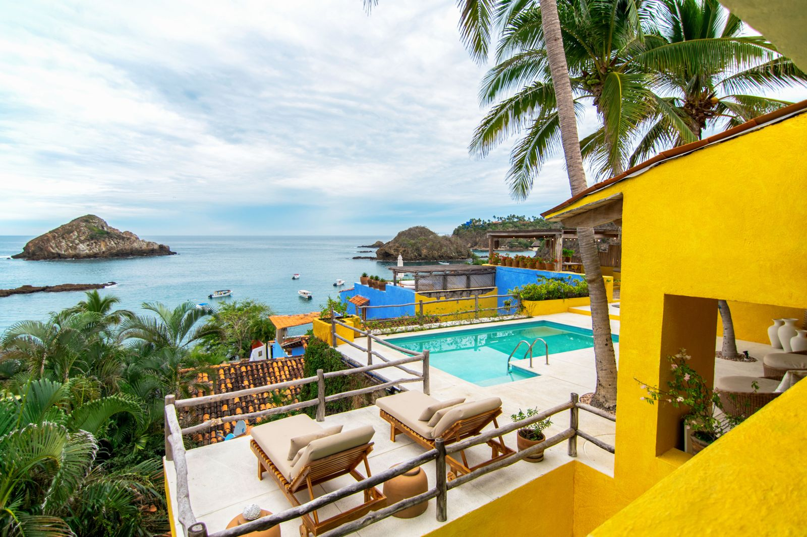

For sale
Casita Crayola
Casitas de las Flores, Costa Careyes
Casita
Four suites above Careyes Bay.
Casita Crayola, Casita 521, sits in Phase 1 of Casitas de las Flores on a 417 m² lot, with spectacular views of Careyes Bay. It has four suites, each with its own full bathroom.
The house is arranged around a living room, an indoor dining room and a fully equipped kitchen, with a second dining table outdoors on the terrace. A large swimming pool with two sun decks faces the bay.
Two suites have king beds; the other two pair a double bed with bunk beds, a layout that suits a family with children or several generations under one roof.
- Casita
- No. 521
- Location
- Phase 1, Casitas de las Flores
- Lot size
- 417 m² (4,489 sqft)
- Suites
- 4
- Bathrooms
- 4 full
- Beds
- 2 king; 2 double with bunk beds
- Pool
- Large, with two sun decks
- Dining
- Indoor and outdoor
- Views
- Careyes Bay
- Access
- Manzanillo airport 1 h 30 min; Puerto Vallarta 2 h 45 min
Features
- Spectacular views of Careyes Bay
- Large swimming pool with two sun decks
- Indoor and outdoor dining areas
- 4 suites with full bathrooms
- Fully equipped kitchen with dishwasher
- Washer and dryer
- Air conditioning
- Wi-Fi and Sky TV
- On-site parking
Gallery
Inside Casita Crayola.
9 photos. Select any to enlarge.
Belonging
Costa Careyes, since 1968.
Careyes was founded by the Italian banker and artist Gian Franco Brignone, and conceived as a community before anything else — a place where architecture, art and the Pacific belong to one another, and where people belong too.
Being part of Careyes means sharing a way of life with those around you. Residents who hold the same principles and look after this place together.
Buying here is less a transaction than an arrival.
Ownership
How the purchase works.
Careyes sits within Mexico's restricted coastal zone, so foreign buyers acquire through a bank trust (fideicomiso). This is standard along the entire Pacific coast and is handled by the notary and trustee bank as part of closing. Full documentation is shared with qualified buyers under confidentiality.
Price
Price on request
Shared directly with qualified buyers
Floor plans, documentation and private viewings are arranged directly with Marco. Virtual walkthroughs available by appointment.